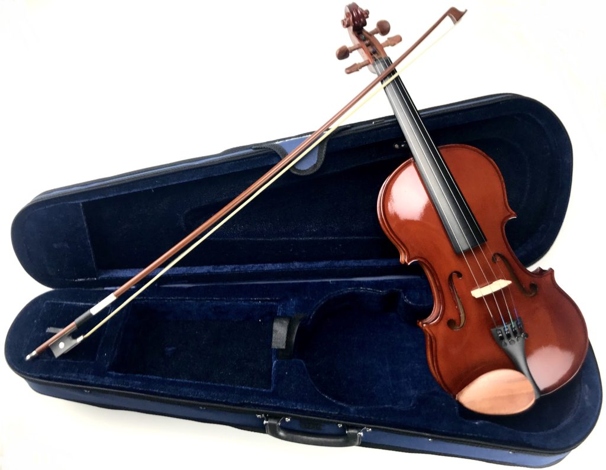
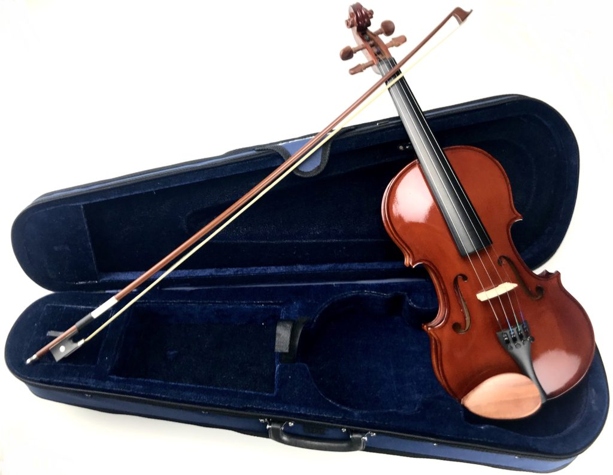

Eastar Violin
Eastar is a brand that is well known for their entry level instruments, from drums to saxophones, trumpets to violins. The brand puts each and every instrument through two in house quality inspections before leaving the manufacturing floor.
The drawback of the wide selection of instruments is that they don’t specialize in any one sort of instrument, so you won’t find the finer details that other purely violin manufacturers will have.
On the plus side, they have the manufacturing process down to a science, giving them the ability to produce a good beginner violin for less than many other manufacturers. Their violins also generally come with accessory kits, so a beginner will have everything needed to tune, store and play their violin!


 
